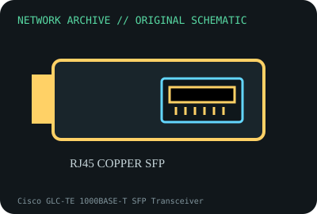

[ MODEL-SPECIFIC NETWORK HARDWARE ]
Cisco GLC-TE 1000BASE-T SFP Transceiver
Extended-temperature Cisco 1000BASE-T copper SFP. Confirm exact product label and revision before applying specifications.

IDENTIFICATION: Confirm manufacturer PID, hardware revision, device ID or module suffix. Nominal standards/link rates are not measurements of payload performance.
Exact specifications and compatibility
| Dedicated subcategory | SFP transceivers: optical and copper |
|---|---|
| Exact product/model | Cisco GLC-TE 1000BASE-T SFP Transceiver |
| Bus, ports and physical interface | SFP host cage; RJ-45 copper port; module-specific thermal/power envelope. |
| PHY, radio or protocol | 1000BASE-T over balanced twisted-pair; Cisco GLC-TE is extended temperature compared with standard GLC-T commercial-grade module. |
| Nominal rate (not measured) | 1Gb/s nominal Ethernet link; Cisco specifies copper channel to 100m under cabling requirements; not throughput test. |
| Measured throughput | No measured benchmark is claimed for a physical specimen. A valid result must record host/peer, link partner, media/cable, driver/firmware, traffic pattern, test tool and duration. |
| Drivers, OS and firmware | No host NIC driver; supported switch/router PID, port power and software determine operation/DOM. |
| Compatibility | Use Cat5 or better cable and compatible SFP port; copper SFPs draw more power and produce more heat than passive optical modules. |
| Variant warning | GLC-TE extended-temperature PID differs from GLC-T standard commercial-temperature and GLC-T= spare SKU; check label/qualification. |
Model and revision notes
GLC-TE extended-temperature PID differs from GLC-T standard commercial-temperature and GLC-T= spare SKU; check label/qualification.
No host NIC driver; supported switch/router PID, port power and software determine operation/DOM.
Use Cat5 or better cable and compatible SFP port; copper SFPs draw more power and produce more heat than passive optical modules.
Archival, ESD and preservation notes
Record PID and module temperature telemetry where available. Avoid hot extraction outside platform guidance and store with RJ-45 port clean/dry.
Document source URL, access date, document revision and specimen label/condition. Preserve without credentials or private configuration.
Primary manufacturer and standards sources
- Cisco Gigabit Ethernet SFP modules data sheetPrimary manufacturer or standards documentation; verify exact SKU and host revision.
- Cisco transceiver compatibility matrixPrimary manufacturer or standards documentation; verify exact SKU and host revision.
- IEEE 802.3ab 1000BASE-T standardPrimary manufacturer or standards documentation; verify exact SKU and host revision.
Manufacturer statements cover the named part or its documented product family; the exact labeled revision and vendor compatibility list take precedence.